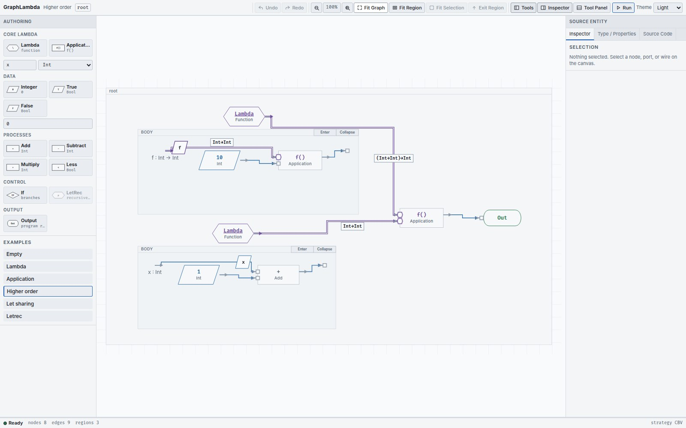
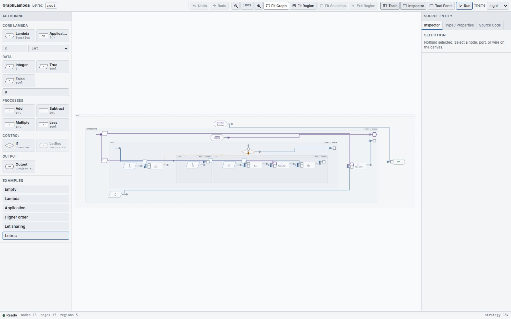

Functions have bodies, and bodies have boundaries
A Lambda is a value-producing function with a nested region. Its parameter, captured values and returned value have distinct roles.
Build and apply a function
Set Binder name and Binder type in the palette before adding a Lambda. The parameter declaration appears at the BODY boundary. Connect that parameter to computations inside the body, then connect the body’s final producer to the designated body-result socket.
The Lambda’s outer
out
carries the whole function. Connect it to Application’s
function
input, connect a value to
argument
, then connect Application’s
result
to its consumer. Creating a Lambda does not evaluate its body; applying the closure does.
To change an existing parameter, select the Lambda and open Type / Properties . Use Parameter Name with Rename Binder , or the Parameter Type selector. Connections follow binder identity, so changing its displayed name does not reconnect occurrences by spelling.
Pass a function as a value


(\f : Int -> Int . f 10) (\x : Int . x + 1)
The outer parameter
f
has type
Int -> Int
. The argument is itself a Lambda, so the program returns
11
. A function wire is not an instruction to run the function immediately.
Capture an outside value
An outside value may enter a Lambda body as a capture , provided its type and lexical scope permit it. An inner body value cannot be wired straight to an unrelated outside consumer. Return it through the body boundary and apply the function instead.
When a body is focused, the editor retains the external sources it already captures as labelled boundary handles. They refer to the original source ports. Introduce a new external dependency from the full graph view first; an existing capture handle can then participate in more connections.
A closure retains its Lambda, body region and captured environment / ports. The Debugger lets you follow these back to source.
Navigate to the right region
Use a region header’s Enter control, or select its owner and use the Inspector’s role-specific buttons:
| Owner | Destination |
|---|---|
| Lambda | Body |
| If | Then or Else, chosen explicitly |
| LetRec | Scope |
Double-clicking a Lambda or LetRec opens its body or scope. If requires an explicit branch choice. Use
Exit Region
or the breadcrumb to return. Breadcrumbs include the owner and role, such as
root / if / then
. Region headers also expose Collapse / Expand to manage the visible detail.
Declare recursion explicitly


To author recursion visually, first create and select a Lambda in the region you want to wrap. Set the recursive binder name and an arrow type, then add LetRec . The control is disabled until a Lambda is selected. Wrapping moves the same Lambda into the new scope and connects it as the recursive definition.
Use the recursive declaration in the definition for self-calls, and in the LetRec body for the initial call. Complete the body-result connection before running. The recursive type must agree with the definition Lambda.
A recursive occurrence inside the definition is drawn with a loop marker. The ordinary call in the surrounding LetRec body stays an ordinary function wire. Drawing a cycle elsewhere does not declare recursion.